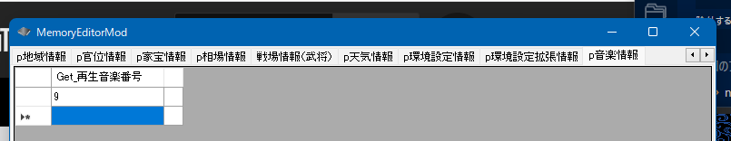

天翔記内に元々あるBGM、及び、_inmmなどでユーザー独自に追加したBGMを再生するAPIです。
BGMが再生される直前に、条件によって別のBGM再生に差し替えたい場合は、
On_音楽再生直前 を参照してください。
曲目は、TSMod.iniに記載されている。ご自身の設定によりどちらかになっているかと思います。
-- - - - - - - - - - - - １３曲分布表 -- -- 01 : － -- 02 : － -- 03 : [東北地方][関東地方] -- 04 : [近畿地方][外交コマンド] -- 05 : [戦争・春][戦争・冬] -- 06 : [東海地方][甲信地方][北陸地方] -- 07 : [戦争・秋][戦争・信長][戦争・名将][初期設定][本能寺の変][大坂城] -- 08 : [山陽地方][山陰地方][環境コマンド] -- 09 : [京都御所][海外貿易港][講義コマンド][披露コマンド] -- 10 : [四国地方][九州地方] -- 11 : [全国統一][安土城][戦争コマンド][披露・茶会][披露・御前試合][披露・問答][戦闘・勝利][戦闘・敗北] -- 12 : [戦争・夏][戦争・緊迫][新幕府] -- 13 : － -- 14 : [死亡・滅亡] -- -- - - - - - - - - - - - ３８曲分布表 -- -- 01 : － 14 : [戦争コマンド] 27 : [外交コマンド] -- 02 : [東北地方] 15 : [戦争・春] 28 : － -- 03 : [関東地方] 16 : [戦争・夏] 29 : [本能寺の変] -- 04 : [東海地方] 17 : [戦争・秋] 30 : [死亡・滅亡] -- 05 : [甲信地方] 18 : [戦争・冬] 31 : [全国統一] -- 06 : [北陸地方] 19 : [戦争・信長] 32 : [披露・茶会] -- 07 : [近畿地方] 20 : [戦争・名将] 33 : [披露・御前試合] -- 08 : [山陰地方] 21 : [戦争・緊迫] 34 : [披露・問答] -- 09 : [山陽地方] 22 : － 35 : [戦闘・勝利] -- 10 : [四国地方] 23 : [初期設定] 36 : [戦闘・敗北] -- 11 : [九州地方] 24 : [環境コマンド] 37 : [京都御所] -- 12 : [海外貿易港] 25 : [講義コマンド] 38 : [大坂城] -- 13 : [安土城] 26 : [披露コマンド] 39 : [新幕府]
メモリエディタ には、「p音楽情報」のタブがあり、

のように番号を変更して、カーソルを移動させると、該当の曲番号が再生されますので、トライ＆エラーが捗ります。BGMを停止し、再生する動機としてはこのパターンが一番確率が高いと思われます。
int Get_再生音楽番号()
void 音楽再生(int 音楽番号)
void 音楽停止()
void カスタム::On_プレイヤ担当ターン《メイン画面》() {
int iDaimyoID = pターン情報.現在のターン【大名番号】 - 1;
デバッグ出力 << iDaimyoID << endl;
if (Is_プレイヤ担当大名(iDaimyoID)) {
// 現在の再生BGMを控えておく
int 元の音楽番号 = Get_再生音楽番号();
// 止めて別の音楽を再生
音楽停止();
音楽再生(6);
// 何かイベント
int iBushouID = p大名情報[iDaimyoID].大名【武将番号】 - 1;
噴出ダイアログ《通常・左上》開始(iBushouID, "何か長いイベント\xAメッセージ１");
噴出ダイアログ《通常・左上》更新(iBushouID, "何か長いイベント\xAメッセージ２です");
噴出ダイアログ《通常・左上》更新(iBushouID, "何か長いイベント\xAメッセージ３じゃ");
噴出ダイアログ《通常・左上》更新(iBushouID, "何か長いイベント\xAメッセージ４な");
噴出ダイアログ《通常・左上》終了();
// イベントが終わったので、元の音楽を再生
音楽停止();
音楽再生(6);
}
}
新たにBGMを再生するにしても、ノーマル環境の13曲の分布なのか、それとも_inmmを用いた39曲の分布なのか、あるいは_inmmは利用しているけれども13曲なのか、
状況を考慮する必要性が出てくるかもしれません。
int Get_ＴＳＭＯＤＩＮＩ設定("environment_bgm_mode")
こちらで判断するのがおすすめです。
TSMod.iniの記載にある通り、
bool Is_INMMモード()
こちらは機能はしますが、_inmmモードを使用してるかどうかだけしか取得できず、BGM曲数が判断できないため、利便性に欠けるかと思います。
void カスタム::On_プレイヤ担当ターン《メイン画面》() {
int iDaimyoID = pターン情報.現在のターン【大名番号】 - 1;
デバッグ出力 << iDaimyoID << endl;
if (Is_プレイヤ担当大名(iDaimyoID)) {
// 現在の再生BGMを控えておく
int 元の音楽番号 = Get_再生音楽番号();
// 止めて別の音楽を再生
音楽停止();
int environment_bgm_mode = Get_ＴＳＭＯＤＩＮＩ設定("environment_bgm_mode");
// 39曲モード
if (environment_bgm_mode == 2) {
音楽再生(6);
}
// 13曲モード
else {
音楽再生(4);
}
// 何かイベント
int iBushouID = p大名情報[iDaimyoID].大名【武将番号】 - 1;
噴出ダイアログ《通常・左上》開始(iBushouID, "何か長いイベント\xAメッセージ１");
噴出ダイアログ《通常・左上》更新(iBushouID, "何か長いイベント\xAメッセージ２です");
噴出ダイアログ《通常・左上》更新(iBushouID, "何か長いイベント\xAメッセージ３じゃ");
噴出ダイアログ《通常・左上》更新(iBushouID, "何か長いイベント\xAメッセージ４な");
噴出ダイアログ《通常・左上》終了();
// イベントが終わったので、元の音楽を再生
音楽停止();
音楽再生(6);
}
}
動画に関する主な所は以上となります。 詳しくは「音楽情報型.h」などを参照してください。